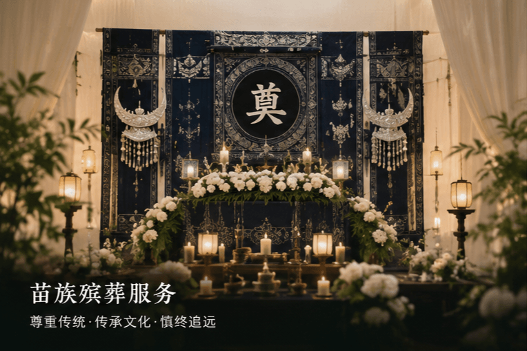
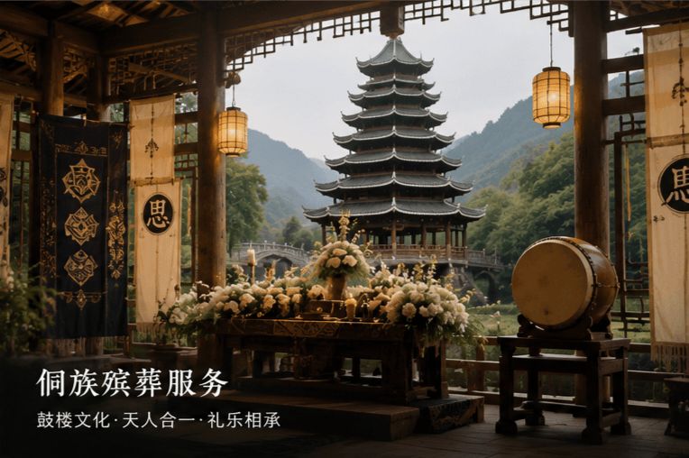
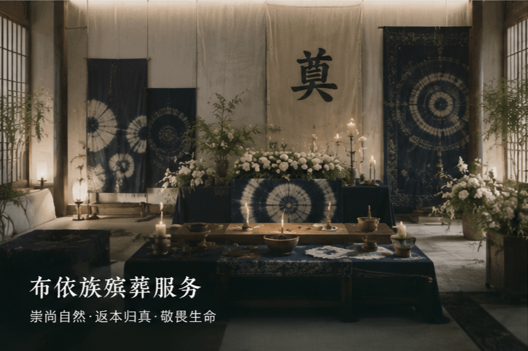
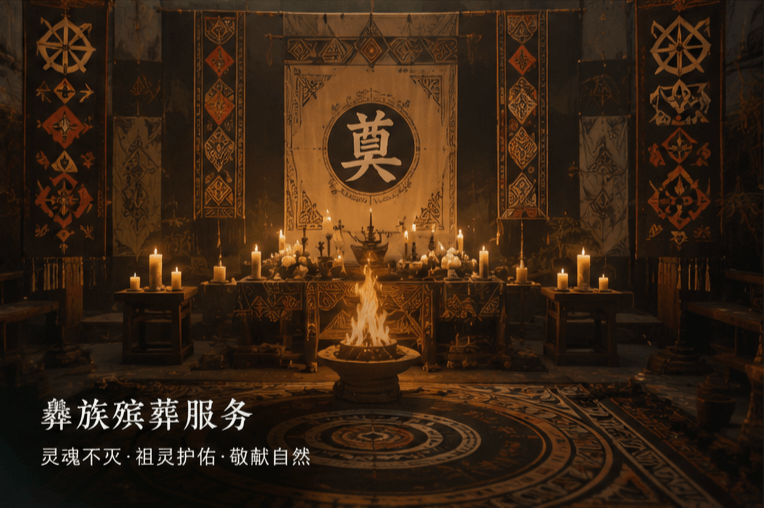

尊重各民族传统礼俗，提供个性化定制服务

尊重苗族“慎终追远、魂归祖先”的传统观念， 在治丧过程中充分融入苗族民族文化元素， 为家属提供符合民族习俗的礼仪服务。

结合侗族鼓楼文化与风雨桥文化特色， 尊重侗族传统礼俗， 让逝者在民族文化氛围中庄重告别。

结合布依族崇尚自然、 敬畏生命的文化理念， 为家属提供温馨庄重的民族礼仪服务。

尊重彝族生命文化传统， 结合民族特色元素， 提供庄严肃穆的礼仪服务方案。
专业、尊重、传承，让民族文化在告别中延续
全程专人服务 · 让告别更加从容
了解民族需求
定制礼仪流程
民族文化设计
全程礼仪服务
我们深知每个民族都有其独特的殡葬文化和传统习俗，这是民族文化的重要组成部分，也是逝者及其家属的精神寄托。
我们的民族特色服务团队由熟悉云贵地区各少数民族文化的专业人员组成，能够根据您的需求，提供符合民族传统的殡葬服务。
如需其他少数民族的特色殡葬服务，欢迎与我们联系，我们将尽力为您提供最符合民族传统的服务方案。